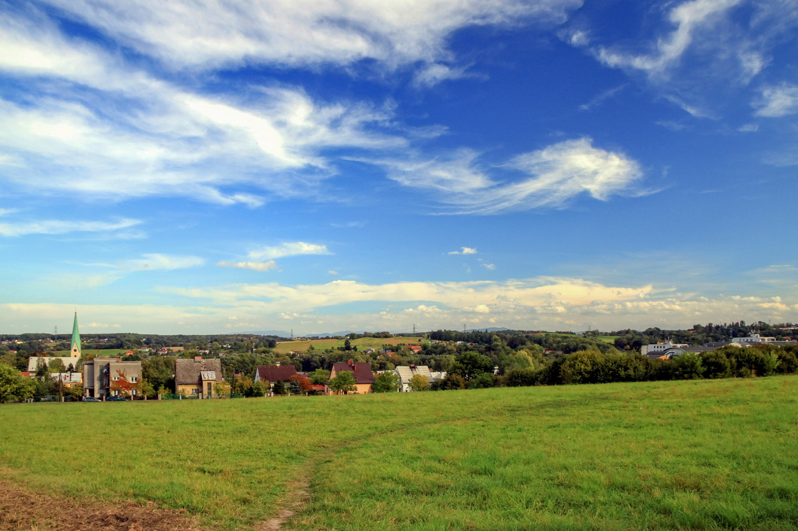
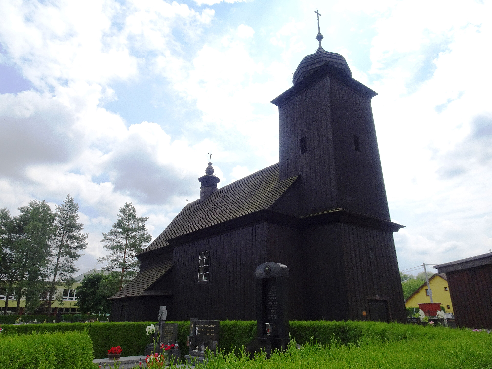

Sedm sousedů. Sedm konkrétních věcí. U každé je napsáno, jak na to. Žádné fráze, žádné sliby do prázdna — jeden hlas v říjnu rozhodne, jestli tu zůstane škola, školka, jídelna i obec, jakou ji známe.

Sedm položek. U každé je napsáno, jak na to — žádné „rozvíjet potenciál". Vaše zaškrtnutí jsou anonymní, žádný e-mail, žádná registrace.
Kdo je PRO, aby škola v Albrechticích měla trvale naplněné tři učebny.
Bez školy mizí mladé rodiny. Bez mladých rodin mizí obec. Tu hranici nesmíme přejít.
Kdo je PRO, aby školka opravila budovu a zůstala, kde je.
Nestěhovat. Nestrhávat. Opravit. Tam, kam děti i rodiče znají.
Kdo je PRO, aby školní jídelna vařila dál zdravé jídlo.
Stejní kuchaři. Stejné suroviny. Lepší čísla. Nezavírá se to, co funguje.
Kdo je PRO, aby v obci byla pošta, obchod a infocentrum.
Tři funkce, jeden vchod. Konec dojíždění do okolí pro rohlík a známku.
Kdo je PRO, aby tu byly mladé rodiny s dětmi.
Nestane se to samo. Bez aktivního přístupu obce nikdy.
Kdo je PRO, aby se škola otevřela občanům.
Tělocvična není muzeum. Sport, besedy, kultura — i po čtvrté odpolední.
Kdo je PRO, aby Albrechtice i Mariánská hora pestrobarevně kvetly.
Krajina, která je víc než silnice a parkoviště.
Plus jedna věc navíc: chceme větší transparentnost obecního hospodaření, víc sbírat podněty občanů a aktivně realizovat to, na čem lidem skutečně záleží.
Jsme skupina nezávislých kandidátů z Albrechtic se společnou snahou: podporovat, rozvíjet a dlouhodobě udržet školu, školku a jídelnu, přitáhnout do obce mladé rodiny, dát mladým perspektivu vlastního bydlení a zachovat občanskou vybavenost, kterou tu máme.
Záleží nám na tom, jak se v obci hospodaří. Chceme větší transparentnost, víc sbírat podněty a víc realizovat to, na čem lidem skutečně záleží — ne projekty pro projekty.

Dřevěný kostel · 1755 Stojí 271 let. Co předáme my?Žádné životopisy z firemních webů. Jen krátce — kdo jsme a proč to děláme.
Otevřená debata o škole, školce a tom, co lidi v obci pálí. Pivo a limonáda zajištěné, židle pro každého.
Projdeme se po Albrechticích. Ukažte nám místo, které by si zasloužilo pozornost.
Pojďme společně otevřít školu pro občany. Sport, beseda, kafe — bez fronty, bez formulářů.
V říjnu rozhodnete, jestli má škola dál tři plné učebny, jestli jídelna vaří, jestli pošta zůstane. Není to o nás. Je to o obci.